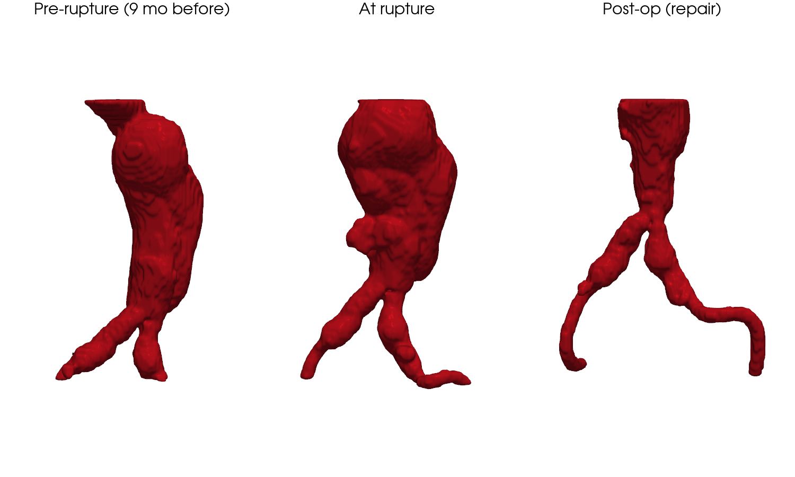
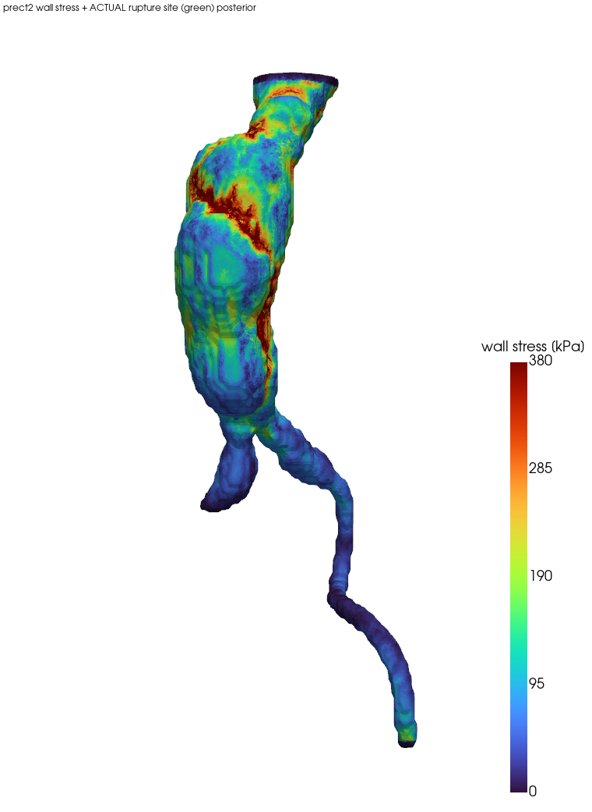

0 概要
同一患者の腎下部腹部大動脈瘤について、破裂の約9.5か月前の待機CTから血流(CFD)・壁応力(FEA)を計算し、 実際の破裂部位（後壁・左・分岐部から約5cm頭側）および術後経過と照合した後ろ向き検証。
要点
- 壁応力FEA上の高応力部位が、実際の破裂部位と一致（術中所見・破裂CTで同定）。
- 破裂前 → 破裂 → 術後の3時点で瘤の増大・破裂・修復を三次元的に可視化。
- 血流CFDでは瘤中央が低WSS＋高OSI（血栓形成環境）。壁応力（破裂力）と合わせ二面から評価。
★ 論文用 Figure（投稿パッケージ）
同一症例の投稿用に整えた主要 Figure（相対表記・匿名化済み）。


1 自然史 — 大動脈3時点 3D再構成
動脈相CTから大動脈をセグメントし、同一配色・同一視点で比較。瘤の増大 → 破裂 → 人工血管置換が読み取れる。

2 壁応力 FEA（腎動脈込みモデル）
腎ネック〜左右腎動脈〜AAA嚢〜分岐〜左右腸骨の中空壁シェル（実効厚1.9mm）。線形弾性 E=2 MPa, ν=0.45, 内圧 16 kPa（120 mmHg）、端＋分枝出口固定。meshpy tetgen-hole約110万四面体

| 部位 | median (kPa) | p95 (kPa) |
|---|---|---|
| AAA嚢 | 158 | 351 |
| 腎レベル | 129 | 305 |
| 壁全体 | 106 | 301 |
嚢の median 158 kPa は複数のメッシュ設定で一貫し頑健。
3 破裂部位との照合
実破裂部位（後壁・左・分岐部+約5cm）を3Dモデル上に指定し、壁応力・血流指標と重ねた。

照合の位置づけ
- 陽性所見：壁応力の高値領域と実破裂部位が一致。
- 精緻化予定：破裂CTでの厳密な位置決めと ILT（壁在血栓）モデル化により定量照合を強化。
- 破裂＝局所応力 ≧ 局所強度。応力(FEA)＝力、低WSS/高OSI/ILT＝壁の脆弱化。両者の重なりが破裂リスク最大部位。
4 血行力学 CFD
拍動流CFDで TAWSS/OSI/RRT を評価。瘤中央は低WSS＋高OSI＝血栓形成・壁変性の環境。


OSIについての注記
- 入口波形が三相性（逆流を含む）のため拡張期に壁全体でWSSが反転しOSIが底上げ。生理的には妥当だが局所識別力は乏しい。
- 破裂部位の局在評価は TAWSS/RRT・壁応力を主指標にするのが適切。
参考：全大動脈CFD（可視化用）

5 方法（要約）
- セグメンテーション：TotalSegmentator（大動脈・腸骨・腎動脈ほか）。
- 壁応力：中空壁シェル（marching cubes → meshpy/tetgen hole メッシュ）＋ scikit-fem 線形弾性。
- CFD：OpenFOAM（pimpleFoam）拍動流、TAWSS/OSI/RRT を後処理算出。
- SimVascular 非依存の自作パイプライン。
6 限界
- 壁：厚さ一様1.9mm・ILT未考慮・線形弾性・壁厚方向1要素。
- 変位：長いモデルの端固定による境界アーティファクト（応力場は有効／組織支持ばねで改善可）。
- 時間差：解析は破裂の約9.5か月前の幾何。破裂時までの growth は未反映。
- CFD：汎用入口波形・出口 p=0（RCR未）・Newtonian。全大動脈CFDは可視化用。
- 単一例・仮説生成的。強度分布（ILT/石灰化）未モデル化のため応力単独の局在予測には限界。
倫理：本症例研究は患者同意および施設倫理委員会の承認のもとで実施し、
掲載データは匿名化（氏名・ID・撮影日等の識別情報を削除、日付は相対表記）している。
図中の内部コード名は患者を特定しない。
解析：OpenFOAM(pimpleFoam) ＋ 自作 meshpy/scikit-fem パイプライン, TotalSegmentator。生成 2026年。
解析：OpenFOAM(pimpleFoam) ＋ 自作 meshpy/scikit-fem パイプライン, TotalSegmentator。生成 2026年。